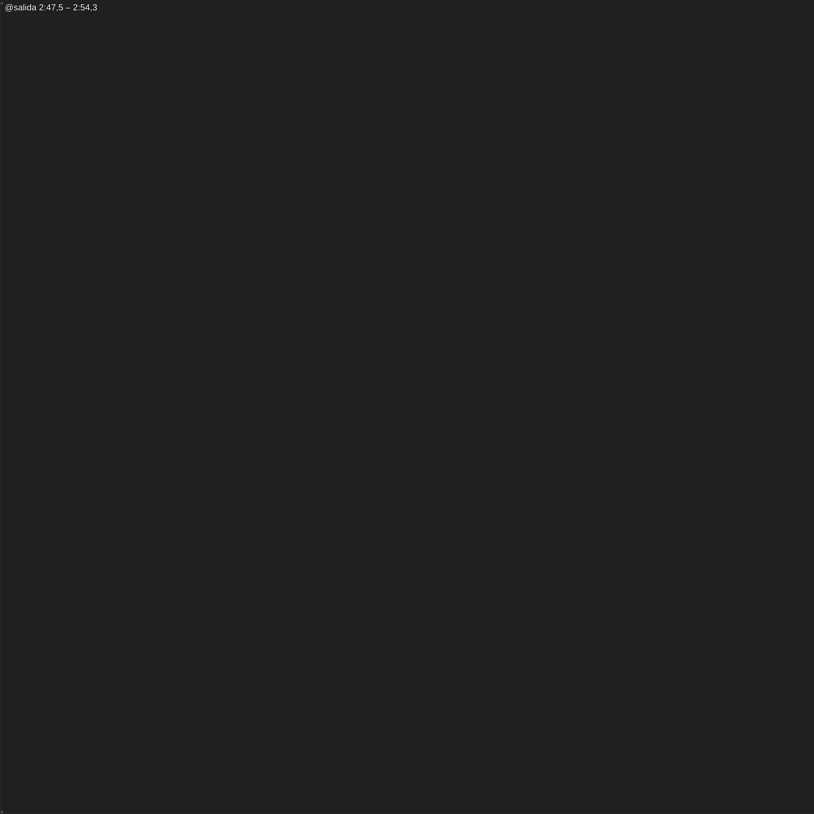

Recorridos · Cap2_02_MananaDespues
Cada personaje con su color; un punto cada 2 s (con el segundo cada 10 s); los conos son las cámaras con su número de plano.
1. @vela · 0:00,0 – 0:30,6
2. @origen · 0:30,6 – 1:16,5
3. @eldran · 1:16,5 – 1:47,9
4. @aro · 1:47,9 – 2:47,5
5. @salida · 2:47,5 – 2:54,3
